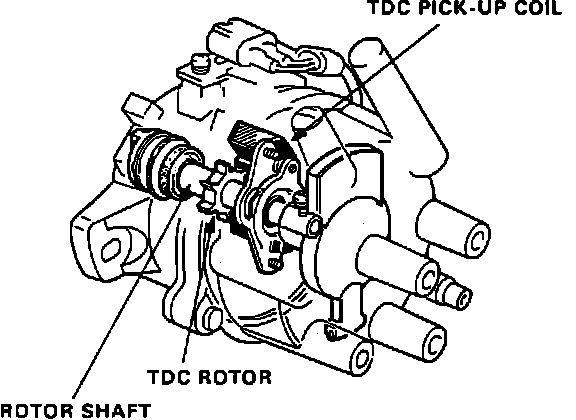

Crankshaft Position Sensor: Description and Operation
The Cylinder Sensor detects the position of the No. 1 cylinder for the sequential fuel injection to each cylinder and ignition timing. This sensor is made up of a single-lobed cylinder trigger rotor and a cylinder pick-up coil. The magnetic cylinder sensor produces an alternating current. A Voltage signal is produced by the windings around the sensor magnet and sent to the ECU.TDC Sensor Operation:

The TDC sensor is mounted inside the distributor. It consists of a coil wound pick-up and a 6 tooth reluctor wheel. The reluctor teeth are positioned to reflect TDC at each cylinder. The sensor creates a low voltage pulse each time a reluctor tooth passes the pick-up coil. The pulse is sent to the ECU at pins C3 and C4. The ECU uses the signal to determine ignition timing at start-up and if the CRANK signal becomes abnormal.